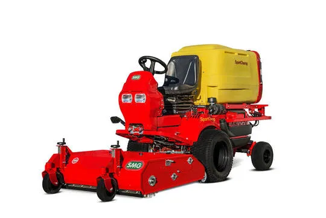
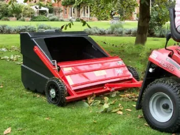

SportChamp
Flagowe maszyny samojezdne do kompleksowej pielęgnacji boisk. Zbieranie i redystrybucja wypełnienia, usuwanie zanieczyszczeń, szczotkowanie włókien, czyszczenie głębokie i sezonowe.

SportChamp SC3D4HL
Topowy model z silnikiem diesel. Hydrostatyczny podnośnik, automatyczne czyszczenie filtra, WOM do osprzętu dodatkowego. Pełna konserwacja boiska w ok. 90 minut.

SportChamp SC2D
Wszechstronna maszyna diesel z szerokim zakresem przystawek: szczotki, rozrzutniki, opryskiwacze, odśnieżarki. Hydrauliczny podnośnik, duża skrzynia filtrująca.

SportChamp SC2BL
Wielofunkcyjna maszyna benzynowa z hydraulicznym podnośnikiem i blokadą mechanizmu różnicowego. Automatyczna jednostka filtrująca z hydraulicznym opróżnianiem.
SportChamp SC2BL/E
Dedykowana do sztucznej trawy hokejowej. Szczotki boczne do narożników i band, turbinowy napęd ssący. Czyszczenie boiska hokejowego w niecałą godzinę.
TurfBoy, Zgrzebło i Zamiatarka
Kompaktowe maszyny samojezdne i narzędzia ciągnione. Idealne do orlików, mniejszych boisk i codziennej konserwacji nawierzchni.

Zgrzebło
Przystępne cenowo narzędzie ciągnione za quadem lub traktorkiem (min. 12 KM). Pionizuje włókna, rozluźnia granulat, wyrównuje wypełnienie. Idealne dla gmin i szkół.

Zamiatarka
Zamiatarka do sztucznych nawierzchni sportowych. Skutecznie zbiera liście, zanieczyszczenia i drobne odpady z powierzchni boiska. Utrzymuje nawierzchnię w czystości.

TurfBoy TB1 Eco DC
Bezemisyjny silnik elektryczny 56V, do 3 godzin pracy na ładowaniu. Regulowany rząd zębów, szczotki trójkątne, opcjonalne sita do liści i kamieni. Światła LED.

TurfBoy TB1 Eco
Samojezdna maszyna z regulowanym rzędem zębów i szczotkami trójkątnymi do prostowania włókien. Zaczep do montażu przystawek: szczotki, maty, listwa magnetyczna, rozrzutnik.

TurfBoy TB1
Maszyna z siedziskiem, sitem wibracyjnym 4–10 mm i technologią TurfScout TS700. Składana szczotka tylna 800–1200 mm, recyrkulacja materiału wypełnienia.

TurfBoy TB2 / TB2T
Maszyna z siedziskiem do kortów tenisowych i boisk. Szczotka rotacyjna z regulowaną głębokością, sito wibracyjne 4–10 mm, filtr klasy M. Fotel amortyzowany.
CareMax i TurfSoft
Wydajne maszyny do czyszczenia i konserwacji. Od dużych boisk po korty padel i nawierzchnie tenisowe.

CareMax CM2B
Wydajna maszyna z szerokością roboczą 2400 mm i prędkością do 15 km/h. Regulowane sito 4–10 mm, szczotki trójkątne, szybkozłącze SMG Omega. Filtr klasy M.

TurfSoft TS2
Kompaktowa maszyna spalinowa do czyszczenia sztucznej trawy. Sito wibracyjne regulowane 4–10 mm, turbina zasysająca, szczotki czyszczące. Koła obracane o 360°, filtr przeciwpyłowy klasy M.

TurfSoft TS3 DC
Elektryczna maszyna 3,4 kW do mniejszych nawierzchni z wypełnieniem piaskowym lub granulacyjnym. Wibrosita, turbina ssąca, składane szczotki boczne. Filtr klasy M.